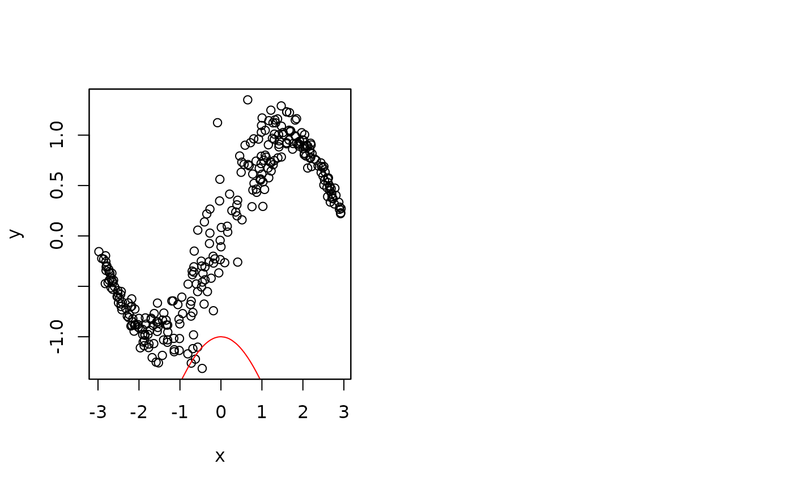

Deep Learning BAMLSS
dl.bamlss.RdThis function interfaces keras infrastructures for high-level neural networks. The function
can be used as a standalone model fitting engine such as bamlss or as an on top
model engine to capture special features in the data that could not be captures by other
model fitting engines.
## Deep learning bamlss.
dl.bamlss(object, optimizer = "adam",
epochs = 30, batch_size = NULL,
nlayers = 2, units = 100, activation = "sigmoid",
l1 = NULL, l2 = NULL,
verbose = TRUE, ...)
## Predict method.
# S3 method for dl.bamlss
predict(object, newdata,
model = NULL, type = c("link", "parameter"),
drop = TRUE, ...)Arguments
- object
An object of class
"bamlss"or abamlss.formula.- optimizer
Character or call to optimizer functions to be used within
fit. For character, options are:"adam""sgd","rmsprop","adagrad","adadelta","adamax","adam". The default isoptimizer_rmspropwith learning rate set to1e-04.- epochs
Number of times to iterate over the training data arrays, see
fit.- batch_size
Number of samples per gradient update, see
fit.- nlayers
Number of hidden layers.
- units
Number of nodes per hidden layer, can be a vector.
- activation
Activation functions used for the hidden layers, can be a vector.
- l1
Shrinkage parameter for L1 penalty.
- l2
Shrinkage parameter for L2 penalty.
- verbose
Print information during runtime of the algorithm.
- newdata
A
listordata.framethat should be used for prediction.- model
Character or integer specifying for which distributional parameter predictions should be computed.
- type
If
type = "link"the predictor of the correspondingmodelis returned. Iftype = "parameter"predictions on the distributional parameter scale are returned.- drop
If predictions for only one
modelare returned, the list structure is dropped.- ...
For function
dl.boost(), arguments passed tobamlss.frame.
Details
The default keras model is a sequential model with two hidden layers with "relu"
activation function and 100 units in each layer. Between each layer is a dropout layer with
0.1 dropout rate.
Value
For function dl.bamlss() an object of class "dl.bamlss". Note that extractor
functions fitted and residuals.bamlss can be applied.
For function predict.dl.bamlss() a list or vector of predicted values.
WARNINGS
The BAMLSS deep learning infrastructure is still experimental!
See also
Examples
if (FALSE) ## Simulate data.
set.seed(123)
n <- 300
x <- runif(n, -3, 3)
fsigma <- -2 + cos(x)
y <- sin(x) + rnorm(n, sd = exp(fsigma))
## Setup model formula.
f <- list(
y ~ x,
sigma ~ x
)
## Fit neural network.
library("keras")
#>
#> Attaching package: ‘keras’
#> The following object is masked from ‘package:rjags’:
#>
#> adapt
b <- dl.bamlss(f, epochs = 2000)
#> Error in eval(predvars, data, env): object 'y' not found
## Plot estimated functions.
par(mfrow = c(1, 2))
plot(x, y)
plot2d(fitted(b)$mu ~ x, add = TRUE)
#> Error in fitted(b): object 'b' not found
plot2d(fitted(b)$sigma ~ x,
ylim = range(c(fitted(b)$sigma, fsigma)))
#> Error in fitted(b): object 'b' not found
plot2d(fsigma ~ x, add = TRUE, col.lines = "red")
## Predict with newdata.
nd <- data.frame(x = seq(-6, 6, length = 100))
nd$p <- predict(b, newdata = nd, type = "link")
#> Error in predict(b, newdata = nd, type = "link"): object 'b' not found
par(mfrow = c(1, 2))

plot(x, y, xlim = c(-6, 6), ylim = range(c(nd$p$mu, y)))
plot2d(p$mu ~ x, data = nd, add = TRUE)
#> Error in h(simpleError(msg, call)): error in evaluating the argument 'x' in selecting a method for function 'as.matrix': object 'p' not found
plot2d(p$sigma ~ x, data = nd,
ylim = range(c(nd$p$sigma, fsigma)))
#> Error in h(simpleError(msg, call)): error in evaluating the argument 'x' in selecting a method for function 'as.matrix': object 'p' not found
plot2d(fsigma ~ x, add = TRUE, col.lines = "red")
## Plot quantile residuals.
e <- residuals(b)
#> Error in residuals(b): object 'b' not found
plot(e)
#> Error in h(simpleError(msg, call)): error in evaluating the argument 'x' in selecting a method for function 'plot': object 'e' not found